Practical guides
The Accidental Project Manager
A clear, practical guide to leading projects without formal authority.
$3.99 Kindle$9.99 Paperback
Buy on AmazonTHE FEATURED READ
The 60-Minute Survival Guide for Leading Projects When Nobody Reports to You
You didn’t set out to manage a project. Now that it’s yours, find a practical way to bring people together and move the work forward.
Kindle $3.99
Paperback $9.99
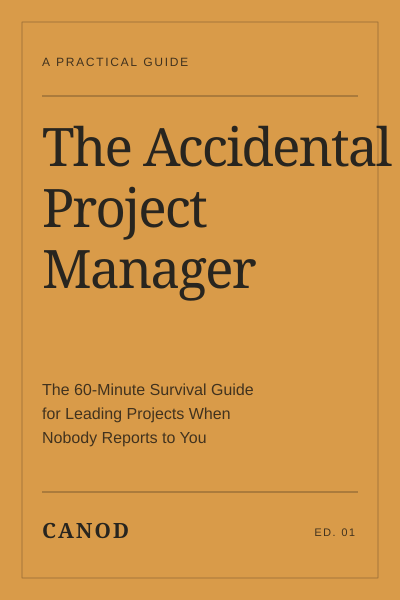
Cover previewSOMETHING FOR YOUR KIND OF DAY
THE CANOD BOOKSHELF
11 titles
Practical guides
A clear, practical guide to leading projects without formal authority.
$3.99 Kindle$9.99 Paperback
Buy on Amazon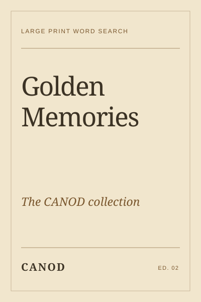
Word search
Familiar themes and large-print puzzles for a nostalgic afternoon.
$14.99 Paperback
Buy on Amazon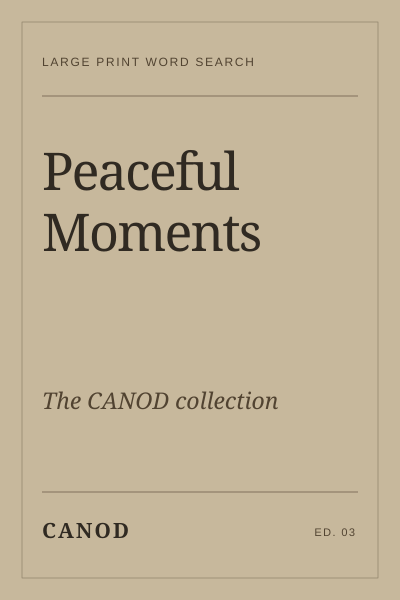
Word search
Easy-to-read word searches for a quiet moment to yourself.
$14.99 Paperback
Buy on Amazon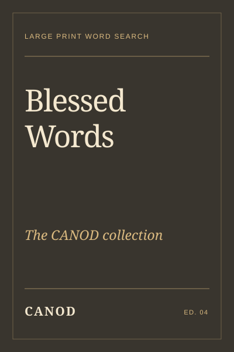
Word search
Faith-inspired word searches with room to pause and reflect.
$14.99 Paperback
Buy on Amazon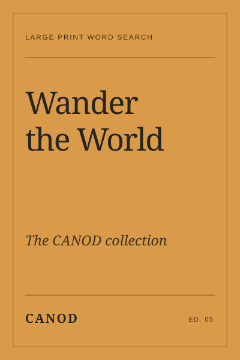
Word search
Travel-themed word searches for curious minds and armchair explorers.
$14.99 Paperback
Buy on Amazon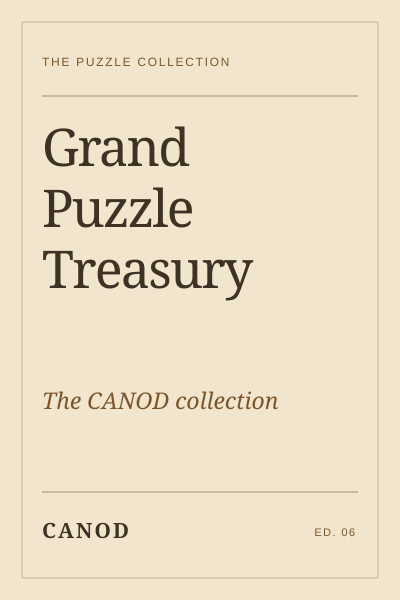
Word search
A collection of puzzles to make a little thinking time your own.
$14.99 Paperback
Buy on Amazon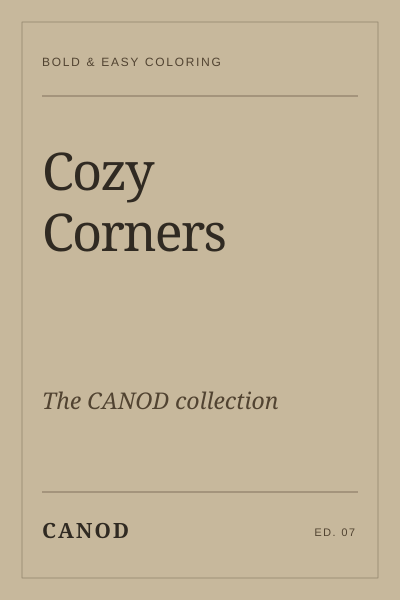
Coloring books
Comforting little spaces, ready for your favorite colors.
$9.99 Paperback
Buy on Amazon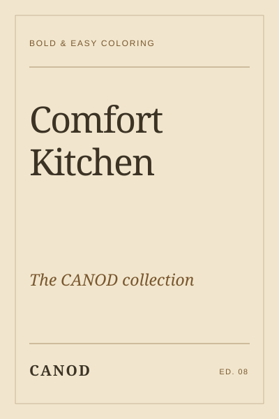
Coloring books
A little kitchen-inspired creativity, one colorful page at a time.
$9.99 Paperback
Buy on Amazon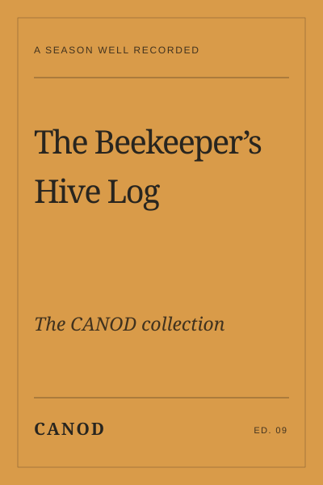
Logbooks & journals
Keep hive observations and the season's small details in one place.
$12.99 Paperback
Buy on Amazon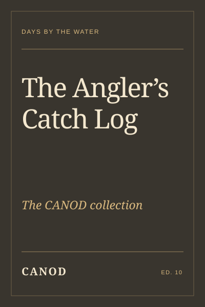
Logbooks & journals
Record memorable catches and the days that brought them.
$12.99 Paperback
Buy on Amazon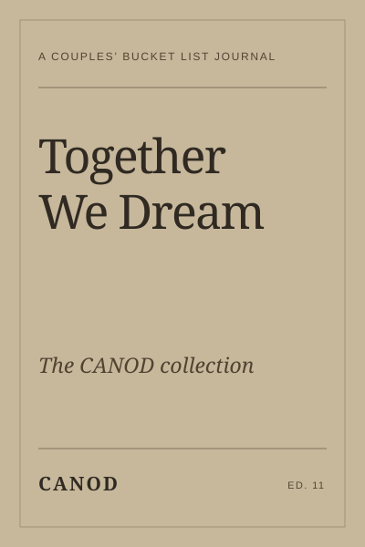
Logbooks & journals
Make room for shared adventures, big ideas, and memories together.
$12.99 Paperback
Buy on AmazonPrices vary by marketplace and edition. Check Amazon for the current price and availability. Covers shown are previews.
HELLO, WE’RE CANOD
CANOD is an independent Canadian publisher of practical books, puzzles, and journals. From finding your feet at work to finding a quiet moment at home, we publish books that make room for learning, creativity, and the small pleasures of everyday life.